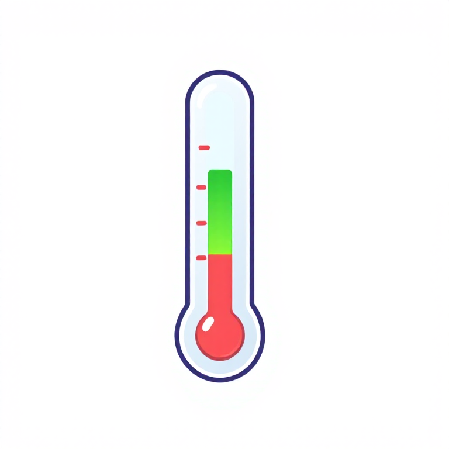

🩺 진단의학과
다른 병원에서 병명을 못 찾아 넘어온 환자를 추리로 맞히는 게임
⚠️ 이건 재미용 게임이야. 증상·검사·약·정답은 상식 수준이고 진짜 의학 조언이 아니야. 진짜 아프면 꼭 병원에 가.
진단의 선생님 (당신)
차트를 읽고, 검사·약으로 떠보며 후보를 하나씩 지워 진짜 병명을 찾자.

🌡️ 체온
0°C
위험선 40.0°C
💊 경험적 치료 — 약이 곧 검사. 맞으면 시간 벌고, 틀려도 후보가 좁혀짐
약을 누르면 📖설명이 먼저 뜨고, 한 번 더 눌러야 투약돼.